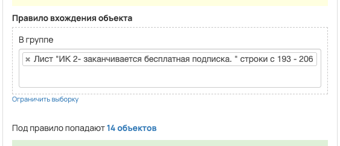
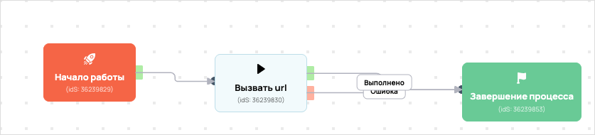

Выгрузка из таблицы в вакас 77547
- ID процесса:
2092847 - Объект: Пользователи
- Статус: Завершен
- Внутренняя страница: 2092847. Выгрузка из таблицы в вакас 77547
- GetCourse: Карточка | Схема процесса
Скриншоты процесса


Коротко для заказчика
- Главное: В процесс попадают пользователи по правилу: В группе (ID: 4862471).
- Дальше он передает данные как: Формы и анкеты.
- Связанных баз Vakas: 1.
Понятное описание процесса
- Процесс работает с объектом GetCourse: Пользователи. Текущий статус процесса: Завершен.
- На вход попадают данные так: В процесс попадают пользователи по правилу: В группе (ID: 4862471).
- Дополнительные условия внутри схемы не извлечены: процесс идет напрямую по основной ветке или условия не подписаны.
- Дальше процесс делает прямые вызовы Vakas: 1. Напрямую задействованы базы: 77547.
- Передача: 77547. Выгрузка из таблицы в вакас: Формы и анкеты. Передаются параметры:
name,email,phone,getcourse_user_id,utm_source,utm_medium,utm_campaign,utm_content,utm_term. - Что происходит в amoCRM: На входе в этап ИНВЕСТ КЛУБ -> ПРОДЛИТЬ ПОДПИСКУ [75971314] база ищет дубль и при необходимости переводит найденную сделку в рабочий этап.
Ход процесса в GetCourse
- Схема состоит из 4 блоков и 4 переходов.
- По типам: стартов 1, условий/ожиданий 0, вызовов URL 1, изменений полей 0, финалов 1.
Блоки процесса: что делают и зачем нужны:
- Блок
36239829«Начало работы» (старт). Что делает: Запускает выполнение схемы для объекта, который попал под правило входа процесса. Зачем нужен: Нужен как точка входа: от него GetCourse начинает движение объекта по схеме. Дальше: если результат «Выполнено», идет в «Вызвать url». - Блок
36239830«Вызвать url» (вызов URL). Что делает: Передает в Vakas: 77547. Выгрузка из таблицы в вакас, канал «Формы и анкеты» (GET); параметры:name,email,phone,getcourse_user_id,utm_source,utm_medium,utm_campaign,utm_content,utm_term; timeout 300 сек. Зачем нужен: Нужен, чтобы передать подходящий объект в 77547. Выгрузка из таблицы в вакас; дальше На входе в этап ИНВЕСТ КЛУБ -> ПРОДЛИТЬ ПОДПИСКУ [75971314] база ищет дубль и при необходимости переводит найденную сделку в рабочий этап. Дальше: если результат «Ошибка», идет в «ув»; если результат «Выполнено», идет в «Завершение процесса». - Блок
36239853«Завершение процесса» (завершение). Что делает: Завершает ветку процесса после выполненных проверок и действий. Зачем нужен: Нужен, чтобы закрыть текущую ветку и не гонять объект по процессу повторно. Дальше переходов нет: это конечная точка ветки. - Блок
43434828«ув» (операция notify_manager_operation). Что делает: Выполняет служебный шаг схемы «ув». Зачем нужен: Нужен как промежуточный технический шаг в схеме «ув». Дальше: если результат «Выполнено», идет в «Завершение процесса».
Что именно входит в процесс
- В процесс попадают пользователи по правилу: В группе (ID: 4862471).
Как именно настроено правило
- В группе (ID: 4862471)
Куда и как передается дальше
| База Vakas | Что передается | Этап в amoCRM | Что происходит со сделкой |
|---|---|---|---|
| 77547. Выгрузка из таблицы в вакас | Формы и анкеты | ИНВЕСТ КЛУБ -> ПРОДЛИТЬ ПОДПИСКУ [75971314] | На входе в этап ИНВЕСТ КЛУБ -> ПРОДЛИТЬ ПОДПИСКУ [75971314] база ищет дубль и при необходимости переводит найденную сделку в рабочий этап. |